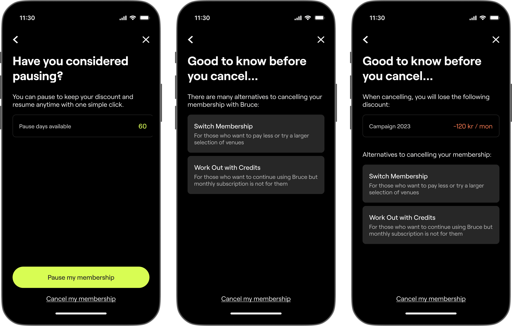
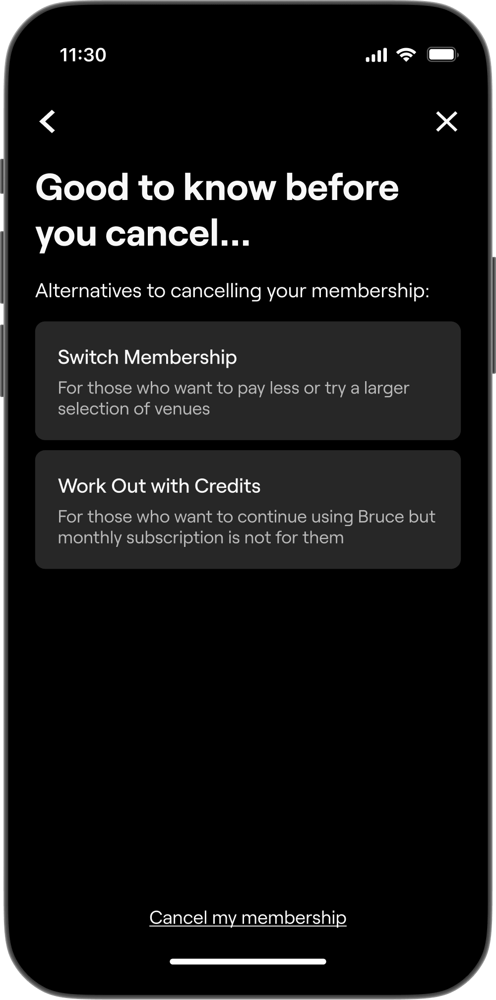
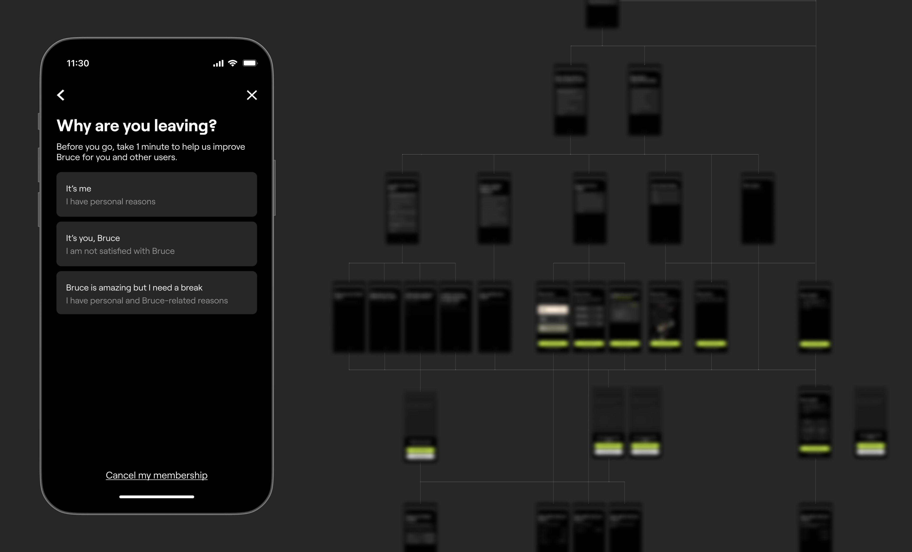
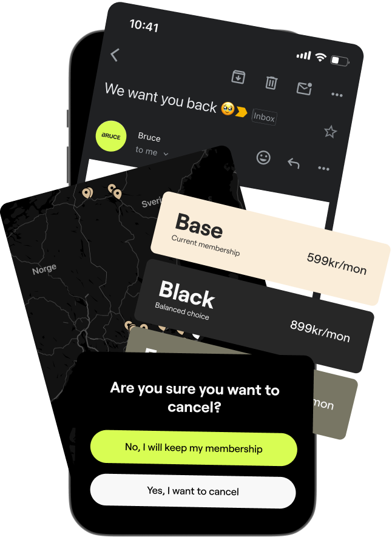

Redesign Membership Cancellation Process to Improve User Retention
Bruce needed to improve retention by keeping users who intended to cancel. I led UX research, a Design Thinking workshop, and end-to-end UX/UI design to redesign the offboarding experience.
#UX Research
#Design Thinking
#UX Design

Problem Description
Bruce is a fitness subscription service. As Bruce grows its user
base,
user retention is a very important task to ensure that its growth is sustainable. I helped Bruce
discover opportunities and initiatives to rentain its users using Design Thinking discovery
workshop, CX Strategy and UX design.
This work was done during my time at SCHMACK, an CX & CRM consulting agency.
About Bruce
Bruce offers all-in-one subscription for access to multiple workout studios and classes in Sweden, Norway and Denmark.

Research
We conduct UX Research & Design Discovery in order to identify opportunities to improve retention:
Quantitative User Survey
Bruce sent out user survey to receive feedbacks on how the product can be improved.
Stakeholders Interviews
I conducted interviews with Bruce's major stakeholders (CEO, CPO, CSO, CMO) to align UX improvements with business objectives.
Affinity Mapping
I hosted a co-ideating workshop to explore problem space with CRM Lead, Product Manager and CPO.

Opportunities
We identified three core components that are integral to retaining users who intend to cancel their memberships:
Provide users with incentives to stay
Understand users' reason(s) for leaving
Interact with users outside of the product
(email, support, offboarding)

Personalised Alternatives
Bruce offers many different types of tiering and an option to pause membership that many users are not aware of. In the first touch point in the offboarding flow, it is important to inform users optimal alternatives that allow users to keep up their working out routine with Bruce based on their subscription and account status.
Understanding the Reasons
If the Personalised Alternatives are offered to users based on what Bruce thinks is the best for users, we also listen to users on why they think it is the best for them to cancel their subscription in order to improve the product and tailor our offer to match with their answers.

UX beyond Product
The offboarding experience was also co-created with other channel owners (CRM & Support) to ensure leaving users had the best experience with Bruce, and the insights gained were used to improve the overall experience, whether the users decided to stay or not at the end of this offboarding experience.

Afterthoughts
This project is where I was able to apply my Design Thinking expertise into the context of designing product & experience for users who are leaving the product. The project was a success with key achievements achieved:
Creates an offboarding experience that contributes to convincing users to return/stay
Designed an offboarding experience that allows Bruce to learn more about its leaving users
Special thanks to Alexander Hoinard (CRM Lead), Klara Sundberg (Project Manager) and the Bruce product team for your work in this project.